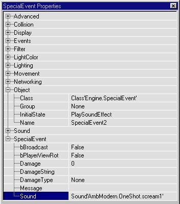

So, you think you're level is just a bit too quiet? Unsettling isn't it. Sound can make or break the atmosphere of a level. This tutorial will show you how to create ambient sounds, triggered sounds and music for your Unreal levels. Lights, sound and music can really create a tangible atmosphere for your level. This tutorial will NOT cover lights so you will have to wait for that tutorial, but You will learn the basics of implementing sound and music.
To start with build a room about 256 x 512 x 512. Size doesn't matter nor do the textures. Add a light and a PlayerStart. Now build a hallway coming off the room and make it 512 long. It doesn't matter what direction it runs. Add a light in the hall. Now make an identical hall and attach it to the end of the first hall at 90 degrees so it makes a nice "L" shape. Now add another hall at the end of the second one, again at 90 degrees making another "L" At the end of the last leg add another room the size of the first. Add lights in all the rooms and all the halls. You should have something like this:

Ambient sounds are those "background" noises that play in your levels. It might be the sound of a fan or machine running in the background, or a drip from a leaky pipe, or the wind howling in an outdoor area. Ambient sounds can really set the tone for your level. Imagine your player is in a huge engine room and there is no sound. Hmm...seems boring and unrealistic. Now add an ambient sound of an engine hum and BAM! The room becomes real! You feel like you are there.
You need two things to make an ambient sound in your level. The ambient sound actor and the sound file it will play.
In the Browser choose Classes and expand KeyPoint. The first item under KeyPoint is *AmbientSound. Click that to highlightt it. Now pick a corner in your starting room and right click and choose Add AmbientSound here. You should get a little icon like this:

That is where your ambient sound will emanate from. Now we need a sound! In the Browser choose SoundFX. We now have to load a sound package. If you click on the Load button at the bottom you will get a window with lots of sound package files with the .UAX extension. There are lots of sounds in each package file. Choose one of the Ambient packages like AmbModern. You will notice that there are two sub menus for AmbModern: Looping and OneShot. They should be self-explanatory, but Looping will play and replay forever and one-shot is a single sound played once. For an ambient sound ( or background noise) you'll want a looping sound so choose Looping.
There are several looping sounds in the menu now. Click on one and press the Play button at the bottom. when you have heard enough press Stop. Find a nice ambient sound you like and highlightt it. I chose "comp1" for no particular reason. Now right-click your AmbientSound actor and open it's properties. At the bottom, expand Sound. Click on AmbientSound and then click Use and then the "..." button. A file name should appear in the field now. If it doesn't go back and highlightt the sound you want again in the browser and then try again. Your properties dialog should resemble this:

You should also hear the sound playing now. If you don't click the update real-time button in the 3D window (it looks like a little joystick). Note: this button will toggle sounds and texture animations, as well as showing invisible portals). You now have an ambient sound in your level! Let's give it a source. Go back to the browser and choose textures and load PlayrShp. Under Panel scroll down until you see a computer screen texture and highlightt it. Now build a brush 256 x 64 x 256 and place it against the wall. Add it to the world. You will want to change the side textures but leave the computer screens on the "front." Move the AmbientSound actor in front of the brush like below:

Now rebuild and run your level. The ambient sound of the computer noises should be playing and it should seem to be coming from the computer screens we added. As you walk away the sound should diminish and get louder as you approach the "computer." If something isn't right or you hear no sound go back re-trace the steps above. If you did everything right you will get sound (assuming the sound works on your computer!).
Okay, we have ambient sounds now, but suppose I want a sound to play when a player does a certain action. How can I trigger it? Glad you asked, young apprentice! Sounds can be triggered and here is how:
You need 3 things to trigger a sound:
Now we need a sound. In the Browser choose SoundFX again and select AmbModern. This will be a OneShot sound. Choose "scream1" and highlightt it. Bring up the SpecialEvent Properties and expand Object.
Set the InitialState to PlaySoundEffect.

Now expand SpecialEvent, highlightt Sound and click Use and the "..." button.
Rebuild and run your level. Now when the level starts you should hear the computer, and when you enter the hallway a scream should come from behind. You can trigger any ambient sound with this method. If you trigger a Looping sound it will play forever. This can be useful if you want a certain looping sound to start only after the player triggers it (like turning on an engine or something). The scream should play everytime you walk through the trigger. In a REAL level you would probably only want it to play once so you would set the Trigger property bTriggerOnceOnly to TRUE (under Trigger). There are times, however when you want a one-shot to play everytime it is triggered, for instance, if you had a wooden floor you wanted to creak everytime someone stepped on it.
Okay, we can make ambient sounds, we can trigger and ambient sound, we can trigger a one-shot sound. What else can we do? In the AmbientSound properties you will notice other fields like, SoundPitch, Radius and Volume. If you don't know what these do then play with the setting to discover. I could tell you but that would spoil the sense of discovery for you. :)
Someone I like and respect said to me: "If you're going to do a sound tutorial you might as well cover music, too." that is not an exact quote but that is basically what he said. So here goes:
Music is too cool in a level and essential for a good single player level. The music in Unreal is cool and you can implement it very easily. In the Browser choose Music (oddly enough) and then Load. You will see the various music files that came with the game Unreal. You will recognize most of these. Load some into the Browser, highlight it and click Play to sample some. When you are through playing click Stop.
Pick one you like. I chose EverSmoke because I like it.
To make Eversmoke the music for your level is too easy. Press F6 to open the Level Properties menu. Expand Audio.
Now make sure your music selection is highlightted in the Browser and highlightt Song and then click Use and "..." and your properties dialog should now have the Eversmoke file udner Song.

Now rebuild and run the level and when you start the music should be playing. Cool and easy, huh?
"But Wolf, after a coule minutes I'm sick of EverSmoke. What do i do?" You can change the music anytime in a level by adding a MusicEvent. In the Browser choose Classes and expand Triggers and highlightt *MusicEvent. Go to the end of your first hall in the 3D view and add a MusicEvent there. Give it a unique Tag (under Events) like "musicswitch." Choose Music in the Browser and load a new music file. highlightt it and then open the MusicEvent Properties. Under MusicEvent highlightt Song, click Use and "..." and the new song should appear in the field.

Now add a Trigger and under Events set it's Event to "musicswitch." Rebuild and run and now when you get to the end of the hall (the trigger) the music should change.
You can also use the music event to change the "mood" of the music. This can be a wonderful effect, especially in SinglPlayer levels. You do it by adding a MusicEvent and triggering it the way we did above. Choose the same song you started with and under SongSection selct 0 1 or 2. The slider goes to 255 but that doesn't matter. I beilieve there are 3 settings
Now, I may be wrong on those but try them and you sill see the difference. As you progress down the hall add MusicEvents and Triggers to change the music. Set them kind of far apart so you can notice the change. You can see that implementing these at key points and times in your level can truly enhance the player's experience.
You can also Turn off the music with a music event by clearing the Song field and setting bSilence to True.
Try it. after adding the Song sectin changes, at the end of your halls add one to kill the sound.
I can't stress enough how much music and sound can affect your levels. The right music at the right time can get a player's juices flowing and set the tone for the level and events going on around him. The placement and proper use of sound effects can make the atmosphere of your levels seem realistic and can totlly immerse a player in your level. Music and sound are essential parts of any good level and should be used wisely. too many music changes can distract the player and too many sound effects at once can be annoying. If something should only trigger once (scream, explosions, etc...) make sure they only trigger once. If something should make noise add an ambient sound near it and choose the proper sound for the experience (don't make a computer sound like bongo drums and and don't make electric sounds in ancient temples).
Sound and music can add a new dimension to your levels.